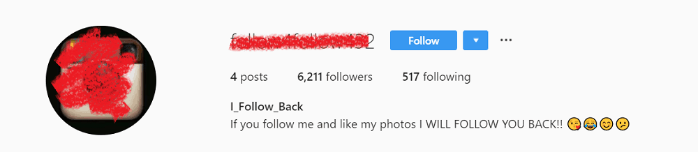
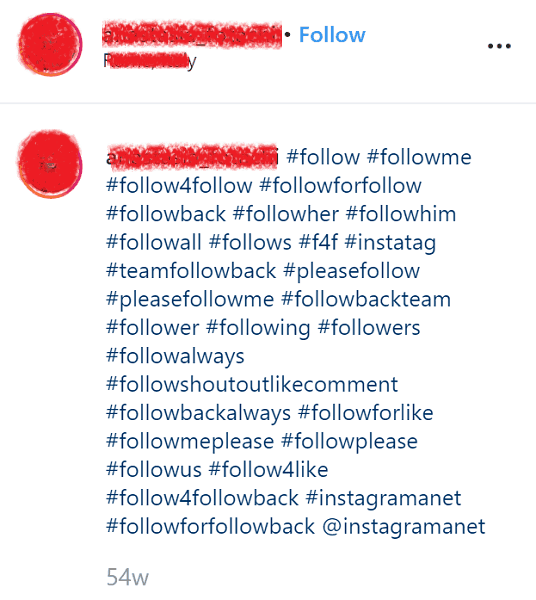
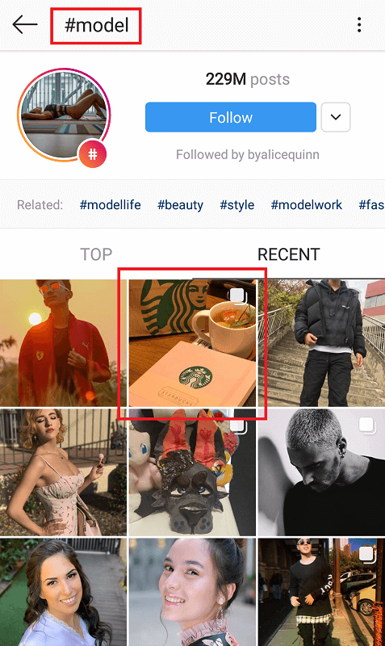
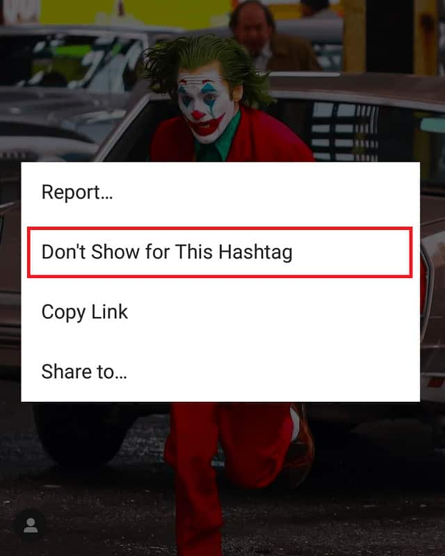
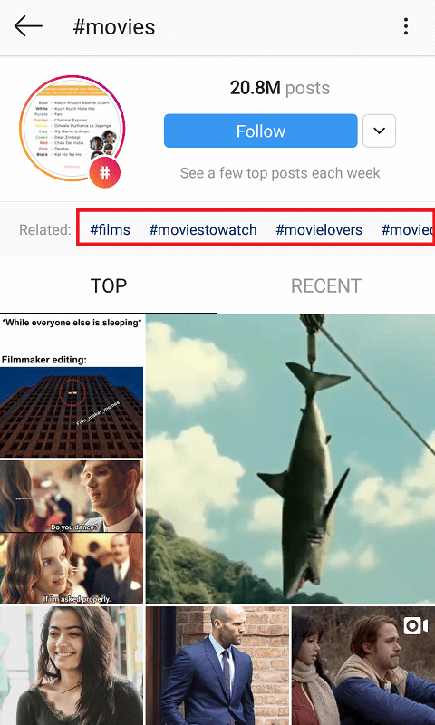
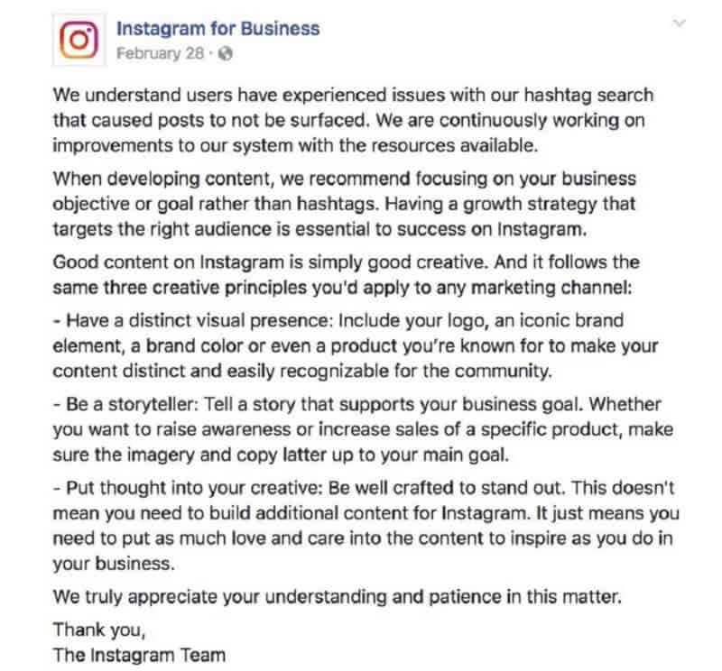

We all know the importance of hashtags. Studies show that posts with at least one hashtag gain about 12.6% more engagement than those that don’t; with countless strategies on optimizing the feature to your profile’s advantage. Among the clever methods and creative “hacks” – we’ll often find the use of “like4like”, “follow4follow”, and “l4l” tags sported by growing businesses and influencers on the platform.
What exactly are these hashtags – and, given their rampant use, can they offer you valuable traffic?
We’ll dive into the effectiveness of these popular tags, but first…
How Do Hashtags Benefit Engagement?
Hashtags are a commonly used marketing method on Instagram, categorizing your content into their appropriate niches. These tags make your posts easier to find for users in your community. For example, accounts dedicated to clothing and fashion will likely tag their posts with #ootd, #fashionista, and #instastyle.
Each tag has their own separate page on the platform, displaying a unique stream of posts using that hashtag. Users looking for fashion-related content on Instagram will likely search up the above tags and thus, come across your posts.
Hashtags therefore grant your content with higher exposure and visibility; the more users that come across your posts through its tags, the more likely you’ll gain comments, likes, and overall profile engagement.
With the recently-added feature of following hashtags on the platform, users now have the greater convenience of having content delivered to them, according to their interests.
What are “like4like”, “follow4follow”, and “l4l” Hashtags?
“Like4like” (or l4l) hashtags are used to encourage more “likes” on one’s content. Primarily used by budding profiles, such tags promote an exchange of engagement; if a user likes a post with a “like4like” hashtag, the original poster will like one of the liker’s posts, in return.

The concept remains for the “#follow4follow” hashtag. Those who use the tag are essentially telling others: “If you follow me, I’ll follow you back.”
Other than posts, users may find these hashtags displayed on one’s profile bio. This indicates that the account generally participates in “like” or “follow” exchanges, offering that free boost of engagement in exchange for your own.

While there are no specific rules to these hashtags, it’s often common courtesy to like the same amount of posts on a user’s profile as they did on yours. If a user sees your “l4l” or “like4like” hashtag and proceeds to like five of your posts, for example; it’s generally best practice to like the same amount of posts on their profile, too.
Do the “like4like” or “follow4follow” Hashtags Work?
Yes, though with incredibly short-term effects. There’s a reason why such tags are so popular – they do grant you a quick boost of engagement.
Those participating in “like4like” activities are presumably browsing through these hashtag pages, leaving likes on every post and hoping to gain some in turn.
As such, leaving l4l or follow4follow tags on your content gets it seen by a large community of users involved in the practice. Your post will therefore receive a large swarm of likes (or at the very least, impressions) upon uploading it to your feed.
Though great for a first few minutes (or hour) of engagement, the fun dies down pretty quick; as your post gets overridden by numerous other “like4like” content.
This leaves your post with empty likes and no real engagement. The flaw with “like4like”, “follow4follow”, and similar hashtags is the superficiality in their interactions. You’ll surely lift the numbers up, but are those “likers” or followers truly interested in what your profile has to offer?

Chances are, they’re simply there to gain your likes and follows in return. It’s the quality likers (and followers), however, that determine your success and future engagement on the platform. These are the users engaged in your content for its message and what it is; those who’ll stay loyal to your brand without needing a bribe for interaction.
In short – “like4like” and similar tags do work. But for those seeking an actively involved, long-term audience, the method falls short. (You’ll also have the burden of liking and following back all users who respond to your hashtag).
What are “Spammy” Hashtags? (And Other Bad Hashtag Practices)
Another reason why “like4like”, “follow4follow” and “l4l” hashtags are generally not recommended is their often “spammy” nature.
According to the Instagram community guidelines, users are required to stick to “meaningful and genuine” interactions with one another; maintaining an authentic, creative environment on the platform.

In the case of “like4like”-type hashtags, however, such authenticity is traded for the trivial gain of extra likes, comments, and follows. Instagram thus recognizes this as “spam”, and may penalize your profile as a result.
There are, however, other hashtag-related behavior and methods that easily fall under this category. Below are some generally bad hashtag practices to avoid, for the sake of your account and overall engagement.
Recycling Hashtags
It may be convenient to simply copy and paste a group of hashtags from one post to another; though Instagram frowns upon this.
As per their guidelines, “repetitive” content also falls under “spammy” behavior. Users are thus encouraged to switch their hashtags up every once in a while to avoid abusing the feature.
To save time with this, it’s best to keep 40-50 of your most-used hashtags saved as a note on your phone, and rotate between these as necessary. This way, you’ll not only remain spam-free, but get to experiment with a range of hashtags and their corresponding audiences.
Using Irrelevant Hashtags
While tempting as it is to use “popular” hashtags for their exposure (tags like “model”, “travel”, and “beauty”, to name a few); be sure to keep them relevant to your actual content.

Using unrelated tags on your posts are not only annoying for the users browsing through these hashtag pages – you also raise your chances of getting reported.
When users come across an irrelevant post, they can select the option “Don’t Show for This Hashtag”. While it’s a way of guiding the Instagram algorithm in its content curation, with enough flagged posts – the platform may just start cracking down on your content.

Needless to say, this falls under the Instagram standard of “spammy” behavior. It undermines your engagement in two ways: (1) from a potential Instagram penalty, and (2) failing to reach the “right” audiences, or those actually interested in your niche.
It’s safe to say that “like4like”, “follow4follow”, and “l4l” tags are largely considered “irrelevant”, as they fail to relate or describe your content in any way.
Not Doing Your Research
It may take a bit of effort, but the key to finding the right, effective hashtags is by taking time to research your niche.
You’ll easily find the most popular, common tags used by a community by simply browsing through the Instagram platform itself. Search up any general hashtag related to a topic or niche – the results typically display a further list of tags related to the content.

Browsing through competitor posts is another easy strategy. This helps you discover new tags you may not have heard of before; and allows you to learn from the best. If their posts gain a decent amount of engagement, you may be able to pick up on hashtags that’ll do the same for yours.
You can also find hashtags through third-party tools such as Hashtagify and RiteTag. These apps do all the heavy-lifting and research for you, saving you valuable time; though may come with a few fees and limitations.
Courtesy of Hashtagify and RiteTag.
However, while some hashtags seem relevant enough to your content – it’s best to be extra safe. Some can have a double-meaning that’s easy to miss – and you may only find out when it’s too late.
Courtesy of Pinterest.
To avoid this, be sure to review your hashtags for any awkward spellings or possibilities for double-entendres. You may even find that a hashtag holds a completely different meaning to what you thought originally
The “#bigbrother” hashtag, for example, displays countless photos of children with their older male siblings; not exactly the target audience for those aiming for fans of the reality show.
Make sure your tags belong to the proper niche to avoid posting irrelevant content on the wrong feeds.
Abusing Hashtags Can Lead to a Shadowban
So, how do users get penalized through bad hashtag practices?
Most of us have already heard of the mysterious Instagram “shadowban” – the common consequence of bad user behavior. A shadowban essentially restricts your engagement on the platform by reducing your visibility among users and on hashtag pages. Though never addressed by Instagram outright, many users attest to its effects, with plenty having experienced a sudden decline in engagement, reach and impressions.

This is Instagram’s way of keeping the platform content and creativity-focused, rather than one of “farmed” likes and artificial marketing strategies.
Alternatives to “like4like”, “follow4follow”, and “l4l” Hashtags – Other Ways to Boost Engagement
We’ve established that “like4like” and similar hashtags can cause more damage than good; so what are some other, authentic ways of boosting engagement?
Marketing Services
Since the reign of influencers, plenty of marketing services are now available to help boost your engagement and grow your following. These platforms offer human-powered or bot services that take care of all your menial marketing tasks for you; maintaining regular profile activity and visibility among your community.
Kenji
A well-trusted Instagram bot powered by cutting-edge artificial intelligence, Kenji helps you find potential followers by automating your “likes” for you.

Courtesy of Kenji.
Simply enter hashtags, locations, and even competitors related to your niche; and Kenji start sending likes to relevant content on your behalf. This gets you in the notifications of those in your target audience, who are likely to check your profile out and drop a like (or follow!) in return.

Courtesy of Kenji.
The service maintains authentic interactions from those it targets by steering clear of “fake” accounts and focusing on quality, active users.
Upleap
Similarly to Kenji, Upleap helps you interact with potential followers on your behalf. The service, however, is powered by human assistants, basically performing as your personal Instagram gurus.

Courtesy of Upleap.
New users match up with a “dedicated account manager” who consults with you on your profile niche and target audience. They then send out content likes and Story views to potential followers in your community; effectively getting you on their radar.

Courtesy of Upleap.
As with Kenji, these interactions help evoke more engagement on your profile as you focus on more demanding, creative-driven aspects of your Instagram business.
Socialfollow
Those more focused on increasing their social proof will find the ultimate solution with Socialfollow.
The platform offers new businesses and influencers with “free” followers by simply signing up to website and following a few, easy steps. Once a member, you’re asked to define your niche through a number of interests, and are then given access to a network of similar accounts.

Courtesy of Socialfollow.
Follow up to 10 people from this pool of users, and like magic – the platform grants you up to 50 followers from this same network of users. Unfollowing these new users will alert your new followers to do the same to you, so take care not to do this!

Courtesy of Socialfollow.
It’s a free, easy way of boosting an audience on Instagram; no surveys or account passwords required.

Courtesy of Socialfollow.
Engagement Pods
Engagement pods, like “#follow4follow” or “#like4like” strategies, have a similar “I’ll scratch your back, you scratch mine” mentality about them. However, unlike “#lik4like” hashtags, membership to an engagement pod can at least ensure consistent engagement on future posts.
Engagement pods are like “secret clubs” on Instagram for certain niches. Members of a pod dedicate time to liking each others posts; thus boosting one another’s engagement, ranking high on hashtag pages and other people’s feeds.
These groups have strict rules in place on when and how to engage with one another’s content, ensuring consistent engagement for as long as you’re a member.
Since they’re kept on the down-low, users are recommended to do a bit of digging; some manage to find their engagement pods through Facebook groups or Reddit forums, to start.
Courtesy of Reddit.
Alternatively, you can ask around via Instagram message. This may take a bit more time, however, with a high chance of rejection.
“Like4like” Offers Short-Term, Rather Than Quality Engagement
Depending on your Instagram goals, using “like4like”-type hashtags may not be the most sustainable strategy. They’ll give you that short burst of likes, sure; but none of them from real, engaged fans.
It’s thus worth looking into substantial methods of growing your audience and content reach. These can include the help of quality third-party services, social media marketing expertise, or simply maintaining good content and a masterful hashtag game.
Whatever your tactics may be, keep in mind that it’s quality engagment, rather than numbers – that determine your long-term Instagram success.